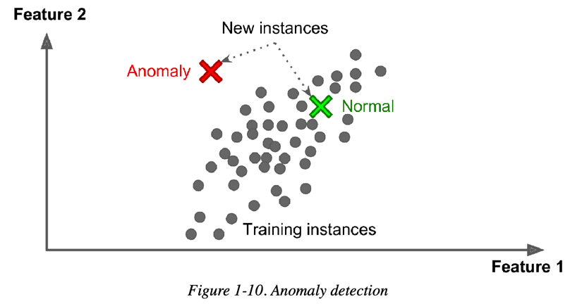
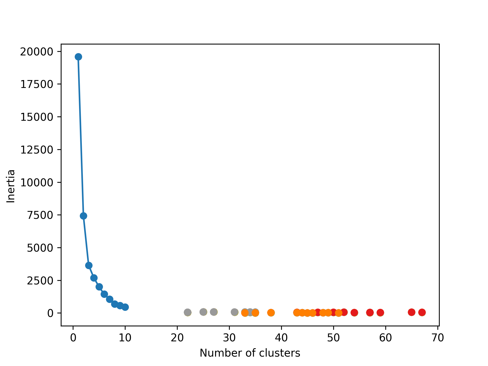
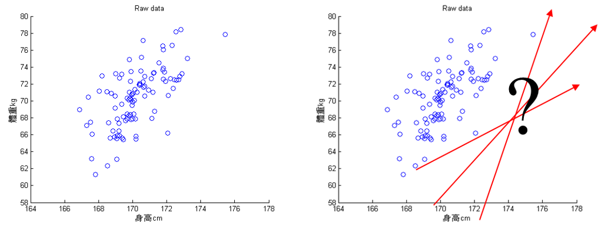
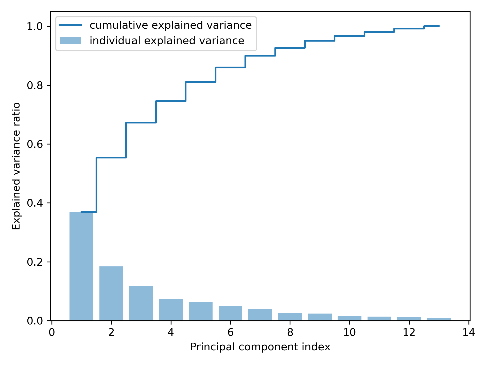
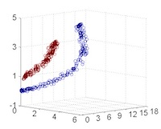
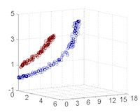

非監督式學習
Table of Contents
href=“https://letranger.github.io/AI/20240117081647-%E9%9D%9E%E7%9B%A3%E7%9D%A3%E5%BC%8F%E5%AD%B8%E7%BF%92.html”><img align=“right” alt=“Hits” src=" ></a>
#+end_export
></a>
#+end_export
1. 非監督式學習

Figure 1: AI, Machine Learning與Deep Learning
1.1. 目的
非監督式學習接收未被標記的數據，並通過演算法根據資料的基礎結構(如常見的模式、特色、或是其他因素)將數據分類，而非 做出預測 。例如：
- 將網站訪客進行分類: 性別、喜好、上網時段
將一堆照片依類型分類: cat、automobile、truck、frog、ship…

Figure 2: 照片分類
異常檢測(Anamaly Detection): 例如，找出不尋常的信用卡交易以防止詐騙、找出製程中有缺陷的產品、將資料組中的離群值挑出來再傳給另一個演算法

Figure 3: Novelty Detection
1.2. 非監督式學習的常見演算法
為了讓相近的資料可以聚集在一起，通常還是會將資料的特徵值數值化，再透過計算資料間的「距離」進行分群，在此常以「歐幾里得距離」為計算方式。常見的分群演算法包括：
1.2.1. 分群(clustering)
聚類(集群)
- K-Means
- DBSCAN
- 階層式分群分析(Hierarchical Cluster Analysis, HCA)
1.2.2. 異常檢測與新穎檢測
- One-class SVM
- 孤立森林(Isolation Forest)
1.2.3. 降維
降維有兩大分支：線性投影與流形學習1。
線性投影
- 主成分分析(Principal component analysis, PCA)
PCA有數種變形：mini-batch變形式PCA(incremental PCA)、非線性變形(kernel PCA)、稀疏變形(sparse PCA)
- 奇異值分解(Singular value decomposition, SVD)
降低原來特徵所組成的矩陣的秩（rank)，使得原來的矩陣可以使用擁有較小的秩的矩陣所組成的線性組合來表示。
- 隨機投影(Random projection)
由高維投影至低維空間，但同時保留點與點間的矩離，可以使用隨機高斯矩陣（random Gaussian matrix)或隨機稀疏矩陣(random sparse matrix)來實現。
- principal component analysis
- singular value decomposition
- random projection.
流形學習(Manifold learning)
- Isomap
透過估算點與粌近點的捷線(geodesic)或曲線距離(curved distance)，而非使用歐式距離(Euclidean distance)來學習資料流形的內蘊幾何。
- t-distributed stochastic neighbor embedding(t-SNE)
將高維度空間的資料嵌入至二維或三維的空間
- multidimensional scaling (MDS)
- locally linear embedding (LLE)
- dictionary learning
- random trees embedding
- independent component analysis
2. 聚類(群集)
「群集」 的概念簡單來說，就是將相似的資料分在同一群體內，從而找出數據中的隱藏結構。K-Means 是一種常用的非監督式學習演算法，用來進行資料分群。
- 任務: grouping objects together based on similarity.
- 應用:
- 在信用卡詐欺偵測中，聚類可以將詐欺交易分組在一起，將其與正常交易分開。
- 學生同質性分組
- 如果我們的資料集中的觀測值只有幾個標籤，我們可以先使用聚類對觀測值進行分組（不使用標籤）。 然後，我們可以將少數標記觀測值的標籤轉移到同一組內的其餘觀測值。 這是遷移學習的一種形式，也是機器學習中一個快速發展的領域。
2.1. K-Means
先來這裡(K-Means Clustering Demo)試一下什麼是K-Means Cluestering。
2.1.1. K-means演算法
將 n 個點劃分為 K 個群集，每個點會根據與各群集中心的距離被歸入最近的群集，這樣每個群集內的資料點都與其中心點最接近。K-Means 的核心是根據歐幾里德距離來衡量資料點之間的相似性，並不斷調整群集中心以優化分群結果。將n個點劃分到K個聚落中，如此一來每個點都屬於離其最近的聚落中心所對應之聚落，以之作為分群的標準。

Figure 4: scikit-learn blobs
2.1.2. K-Means原理
假設我們有八張沒有標註名稱的動物照片，這些照片中的每張都有兩個特徵值，代表這些動物的特徵分佈，如圖5、6所示。
K-means 演算法的步驟：
- 決定 K 值: 首先 ，我們需要決定要將資料分成幾個群集，這裡假設K 值為2，表示要將這 8 張照片分為 2 個群集。
- 選定 K 個中心點: 隨機 選擇 K 個中心點。在這個例子中，我們隨機選定兩個初始中心點，分別位於 (5, 5) 和 (6, 9) 的位置，如圖7所示。
- 將資料點分群: 接著 ，我們計算每個資料點到各中心點的歐幾里德距離，根據距離將每個資料點分到與它最近的中心點所代表的群集。如圖8和圖9所示，資料點根據距離自動被歸類進群集。
- 調整群集中心點: 將所 有資料點分群後，重新計算每個群集的中心點。
- 這裡的步驟3, 4會不斷重複，直到群集中心點不再改變或改變幅度極小，表示分群過程完成。
- 記錄分群結果: 將最終的分群結果記錄下來，展示每個資料點所歸屬的群集。演算法完成後，資料點會被分成兩個群集，且每個群集的中心點也會進一步優化。
這個步驟可以反覆進行，直到模型收斂，即中心點不再變化為止。 八張未標註動物名稱(標籤)的照片，每張照片有兩個特徵值
/2024-02-10_20-19-55_2024-02-10_20-19-45.png)
Figure 5: 資料庫樣本
八張照片的特徵分佈如下
Figure 6: 待處理資料
詳細的K-means 演算法執行步驟如下:
1. 決定K值
K 值指的是現有訓練資料(八張照片)要分成的群數，此處K值為2。
2. 選定K個中心點
任意選定 K 個(K=2)中心點，在實際的程式實作可以亂數隨機產生這K個資料點。如圖7所示，隨機指定的兩群資料點的中心點為(5，5)、(6，9)。
Figure 7: 標題
3. 將資料點分群

/2024-02-11_15-59-29_2024-02-10_21-14-09.png)
4. 為 K 個群裡的資料點找出新中心點
依前一步驟的分類，此 8 張資料點已分為兩群，接下來我們再為這兩群資料點找出各自的新中心點，計算方式如下:
- 新★X值: 2+3+4+6+7+9 =5.17
- 新★Y值: 6+5+8+3+6+4 =5.33
- 新★X值:1+8=4.50
- 新★Y值:9+8=8.50
Figure 11: 標題
這個結果看起來不太合理對吧，至少(4,8)這點應該要歸入★這組才對。沒關係，因為還沒完成。
5. 重覆步驟 (3)、(4) 進行下一輪的分群，直到分群結果不再變化
接下來就繼續計算各點到新中心點★(5.17, 5.33)、★(4.50, 8.50)的距離、依新的距離重新對資料點進行分群(即步驟3)，再求出新的中心點(即步驟4)，如此重覆不斷進行，直到分群結果不再變動即告完成。
如何訂K值
- 用K-means演算法需設定「K值」，但難免會面臨難以決定分群數量的狀況。同樣的資料如果要分成3群、4群、5群，就必須做三次不同的操作，而且分群的結果彼此之間不一定有其關聯性。
- 利用「階層式分群法」透過階層架構的方式，以對特徵距離的分析，將資料層層反覆地進行分裂或聚合，彈性決定群數。
2.1.3. K-Means實作:隨機數字 sklearn
1: # 隨機生成100個(x, y) 2: import pandas as pd 3: import matplotlib.pyplot as plt 4: 5: data = { 6: 'x': [25, 34, 22, 27, 33, 33, 31, 22, 35, 34, 67, 54, 57, 43, 50, 57, 59, 52, 65, 47, 49, 48, 35, 33, 44, 45, 38, 7: 43, 51, 46], 8: 'y': [79, 51, 53, 78, 59, 74, 73, 57, 69, 75, 51, 32, 40, 47, 53, 36, 35, 58, 59, 50, 25, 20, 14, 12, 20, 5, 29, 27, 9: 8, 7] 10: } 11: samples = pd.DataFrame(data) 12: plt.scatter(samples['x'], samples['y']) 13: plt.savefig("images/kmeansScatterData.png", dpi=300) 14: #plt.show()
Figure 12: 原始資料
1: # 隨機生成100個(x, y) 2: import pandas as pd 3: data = { 4: 'x': [25, 34, 22, 27, 33, 33, 31, 22, 35, 34, 67, 54, 57, 43, 50, 57, 59, 52, 65, 47, 49, 48, 35, 33, 44, 45, 38, 5: 43, 51, 46], 6: 'y': [79, 51, 53, 78, 59, 74, 73, 57, 69, 75, 51, 32, 40, 47, 53, 36, 35, 58, 59, 50, 25, 20, 14, 12, 20, 5, 29, 27, 7: 8, 7] 8: } 9: samples = pd.DataFrame(data) 10: 11: import matplotlib.pyplot as plt 12: from sklearn.cluster import KMeans 13: 14: kmeans = KMeans(n_clusters=3) #預計分為三群，迭代次數由模型自行定義 15: kmeans.fit(samples) 16: cluster = kmeans.predict(samples) 17: 18: plt.scatter(samples['x'], samples['y'], c=cluster, cmap=plt.cm.Set1) 19: plt.savefig("images/kmeansScatter.png", dpi=300) 20: #plt.show()

Figure 13: scikit-KMeans
2.1.4. 評估效能
在 K-Means 這種分群（非監督式學習）演算法中，沒有像監督式學習那樣的 score 或 R² 直接用來衡量模型的準確性，因為分群並沒有「正確答案」來比較。但可以使用其他的效能指標來評估分群的質量，以下是常用的幾個評估指標：
1. Inertia（慣性）
- 定義：慣性是 K-Means 內建的一個效能指標，表示資料點與其最近的群集中心點之間的平方和。它衡量了分群內的緊密度。
- 公式：每個資料點到其所屬群集中心的距離平方和的總和。
- 解讀：慣性值越小，表示分群內的資料點越接近彼此，模型表現越好。
1: print('Inertia:', kmeans.inertia_)
Inertia: 6647.977232845085

Figure 14: K 值與慣性值的關係
2. Silhouette Score（輪廓係數）
- 定義：Silhouette Score 衡量每個資料點與其所屬群集中的其他點的距離，以及與最近群集的距離。它同時考慮了群集內的緊密度和群集間的分離度。
- 範圍：Silhouette Score 的範圍是 -1 到 1，分數越接近 1，表示分群效果越好；接近 0 表示資料點處於兩個群集之間；負數表示資料點可能被分錯了群。
1: from sklearn.metrics import silhouette_score 2: 3: score = silhouette_score(samples, cluster) 4: print('Silhouette Score:', score)
Silhouette Score: 0.5107383117230143
3. Davies-Bouldin Index
- 定義：這個指標衡量每個群集的緊密度與其他群集之間的分離度。值越小表示分群效果越好。
- 範圍：0 到無窮大，分數越小，表示群集之間的距離越大，分群效果越好。
1: from sklearn.metrics import davies_bouldin_score 2: 3: db_score = davies_bouldin_score(samples, cluster) 4: print('Davies-Bouldin Index:', db_score)
Davies-Bouldin Index: 0.6690027647535013
2.1.5. K-Means應用: 壓縮影像
1: #輸出說明 2: import numpy as np 3: import matplotlib.pyplot as plt 4: from matplotlib import image 5: from sklearn.cluster import MiniBatchKMeans 6: 7: # K 值 (要保留的顏色數量) 8: K = 4 9: 10: # 讀取圖片 11: image = image.imread(r'./images/Photo42.jpg') 12: w, h, d = tuple(image.shape) 13: print(w,h,d) 14: image_data = np.reshape(image, (w * h, d))/ 255 15: print(image_data.shape) 16: print(image_data[0]) 17: # 將顏色分類為 K 種 18: kmeans = MiniBatchKMeans(n_clusters=K, batch_size=10) 19: labels = kmeans.fit_predict(image_data) 20: print(labels[:10]) 21: centers = kmeans.cluster_centers_ 22: print(centers.shape) 23: print(centers) #K個中心點的RGB 24: # 根據分類將顏色寫入新的影像陣列 25: image_compressed = np.zeros(image.shape) 26: label_idx = 0 27: for i in range(w): 28: for j in range(h): 29: image_compressed[i][j] = centers[labels[label_idx]] 30: label_idx += 1 31: 32: plt.imsave(r'images/compressTest.jpg', image_compressed)
480 640 3 (307200, 3) [0.20784314 0.16078431 0.23921569] [0 3 3 3 3 0 3 3 3 3] (4, 3) [[0.13623196 0.08966844 0.14825708] [0.59140873 0.34351877 0.33948652] [0.86889281 0.7085929 0.73685242] [0.36261776 0.22364291 0.2474113 ]]

Figure 15: 以KMeans壓縮圖片色彩
2.1.6. [小組作業]K-Means分群實作 TNFSH
以K-Means對鳶尾花資料(特徵值)進行分群
作業內容須包含:
- 程式碼
- 以不同特徵值(\(C^4_2\))配對進行cluster，畫出scatter
- 以不同特徵值(\(C^4_3\))配對進行cluster，畫出3D scatter
- 對於輸出之結果應輔以文字說明解釋。
- 以pdf繳交報告，報告首頁需列出組員列表(姓名、教學網ID)
2.1.7. [小組作業]以K-Means壓縮影像實作 TNFSH
參考前述[K-Means應用: 壓縮影像]，自行找一張圖(jpg)進行以下測試
- 以不同K值、batchSize進行影像壓縮，並探討在不同情況下的壓縮效果(包含影像大小及品質)
- 以不同類型(顏色數量:全彩、256色、灰階)的圖片進行測試
- 對於輸出之結果應輔以文字說明解釋。
- 以pdf繳交報告，報告首頁需列出組員列表(姓名、教學網ID)
2.2. Hierarchical clustering
階層式分群法(Hierarchical Clustering)透過一種階層架構的方式，將資料層層反覆地進行分裂或聚合，以產生最後的樹狀結構，常見的方式有兩種：
聚合式階層分群法(Agglomerative Clustering): 是一種“bottom-up”的方法，也就是先準備好解決問題可能所需的基本元件或方案，再將這些基本元件組合起來，由小而大最後得到整體。因此在階層式分群法中，就是將每個資料點都視為一個個體，再一一聚合2，如圖163。
/2024-02-11_21-29-19_2024-02-11_21-28-47.png)
Figure 16: Buttom-up
分裂式階層分群法(Divisive Clustering): 是一種“top-down”的方法，先對問題有整體的概念，然後再逐步加上細節，最後讓整體的輪廓越來越清楚。而此法在階層式分群法中，先將整個資料集視為一體，再一一的分裂2，如圖173。
/2024-02-11_21-30-15_2024-02-11_21-30-06.png)
Figure 17: Top-down
2.2.1. 聚合式階層分群法(Agglomerative)
如果採用聚合的方式，階層式分群法可由樹狀結構的底部開始，將資料或群聚逐次合併。
聚合式階層分群步驟：
- 將各個資料點先視為個別的「群」。
- 比較各個群之間的距離，找出距離最短的兩個群。
- 將其合併變成一個新群。
- 不斷重複直到群的數量符合所要求的數目。
聚合式階層分群: step by step
假設現在有6筆資料，分別標記A、B、C、D、E及F，且每筆資料都是一個群。
/2024-02-11_09-04-56_2024-02-11_09-04-42.png)
Figure 18: hierar-1
首先找距離最近的兩個群，在此例為A、B。將A與B結合為新的一群G1，就將這些點分成五群了，其中有四群還是單獨的點。
/2024-02-11_09-06-09_2024-02-11_09-06-00.png)
Figure 19: 標題
接著，再繼續找距離最近的兩個群，依此範例應為D與E，結合為新的一群G2。
Figure 20: 標題
將F與G2合而為新的群G3，這時，這些資料已經被分為三群了。
Figure 21: 標題
如何定義兩個群聚之間的距離
- 單一連結聚合
Single-linkage agglomerative algorithm, 群聚與群聚間的距離可以定義為不同群聚中最接近兩點間的距離。
在分屬不同的兩群中，選擇最接近的兩點之距離，即代表兩群間的距離。因此在群與群間進行聚合時，依據此值最小者做為選取下一步結合之對象。
/2024-02-11_10-13-45_2024-02-11_09-23-14.png)
Figure 22: 標題
公式: \( d(G1, G2)=\min\limits_{ A \in G1, B \in G2 } d(A,B)\)
G1、G3與C之間如何聚合？
- G1與C之間的距離d(G1,C)＝d(B,C)
- G3與C之間的距離d(G3,C)＝d(F,C)
- G1與G3之間的距離d(G1,G3)＝d(B,D)
計算完各群間的距離後，可知d(G3,C)為最短距離，因此G3將與C聚合，成為新群G4。
Figure 23: 標題
倘若要再聚合，由於剩下G1與G4，可聚合成為G5。
/2024-02-11_10-17-37_2024-02-11_10-17-28.png)
Figure 24: 標題
- 完整連結聚合
Complete-linkage agglomerative algorithm, 群聚間的距離定義為不同群聚中最遠兩點間的距離，這樣可以保證這兩個集合合併後, 任何一對的距離不會大於 d。
在分屬不同的兩群中，選擇最遠的兩點之距離，即代表兩群間的距離。因此在群與群間進行聚合時，依據此值最小者做為選取下一步結合之對象。
公式: \(d(G1,G2)=\max\limits_{A \in G1, B \in G2}d(A,B)\)
/2024-02-11_10-18-31_2024-02-11_10-18-24.png)
Figure 25: 標題
G1、G3與C之間如何聚合？
- G1與C之間的距離d(G1,C)＝d(A,C)
- G3與C之間的距離d(G3,C)＝d(E,C)
- G1與G3之間的距離d(G1,G3)＝d(A,E)
Figure 26: 標題
計算完各群間的距離後，可知d(G1,C)為最短距離，因此G1將與C聚合，成為新群G4。
倘若要再聚合，由於剩下G3與G4，可聚合成為G5。
Figure 27: 標題
- 平均連結聚合
Average-linkage agglomerative algorithm, 群聚間的距離定義為不同群聚間各點與各點間距離總和的平均。沃德法（Ward’s method）：群聚間的距離定義為在將兩群合併後，各點到合併後的群中心的距離平方和。
在分屬不同的兩群中，各點之距離的平均，即代表兩群間的距離。因此在群與群間進行聚合時，依據此值最小者做為選取下一步結合之對象。 G1、G3與C之間如何聚合？
/2024-02-11_10-24-58_2024-02-11_10-24-49.png)
Figure 28: 標題
公式: \(d(G1,G2)=\sum\limits_{A \in G1, B \in G2}\frac{d(A,B)}{|G1|\times|G2|}\)
- \( d(G1, C)=\frac{d(A,C)+d(B,C)}{2\times1}\)
- \( d(G3, C)=\frac{d(D,C)+d(E,C)+d(F,C)}{3\times1}\)
- \( d(G1, G3)=\frac{d(A,D)+d(A,E)+d(A,F)+d(B,D)+d(B,E)+d(B,F)}{2\times3}\)
決定群數
可以依照使用者的群數需求或相似度要求，來決定要在哪一層時停止聚合資料。若以完整連結的群間距離計算方式為例，圖上的虛線代表不同的群數，端看使用者需求來決定。
/2024-02-11_10-47-21_2024-02-11_10-47-15.png)
Figure 29: 標題
聚合式階層分群實作
- scikit-learn: Agglomerative Clustering
- 分兩群
1: from sklearn.cluster import AgglomerativeClustering 2: import matplotlib.pyplot as plt 3: import numpy as np 4: 5: # randomly chosen dataset 6: X = np.array([[1, 2], [1, 4], [1, 0], [2, 1], [2, 3], [2, 4], 7: [3, 1], [3, 3], [3, 4], [4, 2], [4, 4], [4, 0]]) 8: clustering = AgglomerativeClustering(n_clusters = 2).fit(X) 9: print('分兩群:',clustering.labels_)
分兩群: [0 1 0 0 1 1 0 1 1 0 1 0]

Figure 30: 分成兩組
- [課堂練習]列出分群的組員
上例將這100個點分成兩群，請撰寫程式列出這兩群各包含哪些資料
- 分三群
1: clustering = AgglomerativeClustering(n_clusters = 3).fit(X) 2: print('分三群:',clustering.labels_)
分三群: [1 0 1 1 0 0 1 0 0 2 0 2]

Figure 31: 分成三群
- 分四群
1: clustering = AgglomerativeClustering(n_clusters = 4).fit(X) 2: print('分四群:',clustering.labels_)
分四群: [0 3 0 0 3 3 0 1 1 2 1 2]
Figure 32: 分成四群
- 分兩群
- SciPy: scipy.cluster.hierarchy[一次分完]
1: import numpy as np 2: import matplotlib.pyplot as plt 3: import scipy.cluster.hierarchy as sch 4: 5: # randomly chosen dataset 6: X = np.array([[1, 2], [1, 4], [1, 0], [2, 1], [2, 3], [2, 4], 7: [3, 1], [3, 3], [3, 4], [4, 2], [4, 4], [4, 0]]) 8: y = np.array(['A', 'B', 'C', 'D', 'E', 'F', 'G', 'H', 'I', 'J', 'K', 'L']) 9: 10: dis=sch.linkage(X,metric='euclidean', method='ward') 11: #metric: 距離的計算方式 12: #method: 群與群之間的計算方式，”single”, “complete”, “average”, 13: # “weighted”, “centroid”, “median”, “ward” 14: 15: sch.dendrogram(dis, labels = y) 16: 17: plt.title('Hierarchical Clustering') 18: plt.xticks(rotation=30) 19: plt.savefig("images/hierarCluster-1.png", dpi=300) 20: #plt.show()

Figure 33: Hierarchical Clustering
- SciPy: scipy.cluster.hierarchy[逐步分群]
1: import numpy as np 2: import matplotlib.pyplot as plt 3: import scipy.cluster.hierarchy as sch 4: 5: # randomly chosen dataset 6: X = np.array([[1, 2], [1, 4], [1, 0], [2, 1], [2, 3], [2, 4], 7: [3, 1], [3, 3], [3, 4], [4, 2], [4, 4], [4, 0]]) 8: y = np.array(['A', 'B', 'C', 'D', 'E', 'F', 'G', 'H', 'I', 'J', 'K', 'L']) 9: 10: #metric: 距離的計算方式 11: #method: 群與群之間的計算方式，”single”, “complete”, “average”, “weighted”, “centroid”, “median”, “ward” 12: 13: plt.cla() 14: # Setting the truncate_mode to 'lastp' to see incremental clustering 15: plt.figure(figsize=(10, 20)) 16: for i in range(2, len(y) + 1): 17: plt.subplot( 6, 2, i - 1) 18: labels = y[:i] # Adjusting labels for each step 19: x_step = X[:i] 20: dis=sch.linkage(x_step, metric='euclidean', method='ward') 21: sch.dendrogram(dis, labels=labels, truncate_mode='lastp', p=i) 22: plt.title(f'Step {i}') 23: 24: plt.suptitle('Hierarchical Clustering Steps') 25: plt.tight_layout(rect=[0, 0.03, 1, 0.95]) 26: 27: plt.title('Hierarchical Clustering') 28: plt.xticks(rotation=30) 29: plt.savefig("images/hierarCluster-2.png", dpi=300) 30: #plt.show()

Figure 34: Hierarchical Clustering
- 利用距離決定群數，或直接給定群數
建構好聚落樹狀圖後，我們可以依照距離的切割來進行分類，也可以直接給定想要分類的群數，讓系統自動切割到相對應的距離。
- 距離切割 所給出的樹狀圖，y軸代表距離，我們可以用特徵之間的距離進行分群的切割。
1: max_dis=5 2: clusters=sch.fcluster(dis,max_dis,criterion='distance') 3: import matplotlib.pyplot as plt 4: plt.figure() 5: plt.scatter(X[:,0], X[:,1], c=clusters, cmap=plt.cm.Set1) 6: plt.savefig("images/clusterScatter.png", dpi=300)

Figure 35: Caption
- 直接給定群數 同時，我們也可以像sklearn一樣，直接給定我們所想要分出的群數。
1: k=4 2: clusters=sch.fcluster(dis,k,criterion='maxclust') 3: 4: import matplotlib.pyplot as plt 5: plt.figure() 6: plt.scatter(X[:,0], X[:,1], c=clusters, cmap=plt.cm.Set1) 7: plt.savefig("images/clusterScatter-1.png", dpi=300)

Figure 36: Caption
2.2.2. [課堂任務]聚合式階層分群 TNFSH
資料
在此給定資料並以數值化座標平面表示，其中包含A、B、C、D、E、F、G及H共8個點。假設B與C點合併為G1；G與H點合併為G2，而G2加入F點後形成G3。 每個資料點有兩個特徵值(如圖37)：
- x = np.array([1,2,3,2,5,5,6,7])
- y = np.array([4,2,2,6,5,0,1,2])
/2024-02-14_15-43-38_2024-02-14_15-43-04.png)
Figure 37: 資料分佈圖
任務1
請利用「單一連結」的群間距離計算方式完成聚合式階層式分群。
/2024-02-14_15-54-50_2024-02-14_15-54-36.png)
任務2
請利用「完整連結」的群間距離計算方式完成聚合式階層式分群。
/2024-02-14_16-09-10_2024-02-14_16-09-01.png)
/2024-02-14_16-14-30_2024-02-14_16-14-22.png)
/2024-02-14_16-15-28_2024-02-14_16-15-15.png)
任務3
請利用「平均連結」的群間距離計算方式完成聚合式階層式分群。
/2024-02-14_16-18-48_2024-02-14_16-18-39.png)
/2024-02-14_16-24-31_2024-02-14_16-24-25.png)
/2024-02-14_16-25-47_2024-02-14_16-25-40.png)
任務4
請以「單一連結」完成之聚合式階層式分群結果，寫出各種不同分群數量時，各群所包含的資料內容。
/2024-02-14_16-29-58_2024-02-14_16-29-33.png)
2.2.3. TNFSH作業: 聚合式分群作業 TNFSH
電子商務網站黃色鬼屋近日收集了200位VIP客戶資料，想將這些客戶依其同質性進行分類。
資料
/2024-02-14_15-28-32_2024-02-14_15-28-25.png)
Figure 38: 黃色鬼屋VIP資料
- 資料集URL: https://raw.githubusercontent.com/letranger/AI/gh-pages/Downloads/schopaholic.csv
- CID: 客戶編號
- Gd: 性別(Male/Female)
- Age: 年齡
- Income: 月收入(單位為萬元)
- ShopSco: 這是黃色鬼屋自訂的敗家分數，範圍由0~100
任務
畫出200位VIP客戶的性別、年齡、月收入、敗家分數的分佈狀況，例如:

- 利用階層式分群的方式幫黃色鬼屋完成以下工作
將階層圖畫出來，例如:

輸出分成5群的結果，例如:
第1群客戶ID: 127 129 131 135 ... 第2群客戶ID: 28 44 46 47 48 ... 第3群客戶ID: 124 126 128 130 ... 第4群客戶ID: 2 4 6 8 10 12 14 ... 第5群客戶ID: 1 3 5 7 9 11 13 ...
2.2.4. 分裂式階層分群法(Divisive Clustering)
如果採用分裂的方式，則由樹狀結構的頂端開始，將群聚逐次分裂。步驟：
- 將所有資料先視為同一群，再依據群內的相異，分裂成兩群。
- 接著，再從兩群中，找群內相異度最高的那群，再分裂一次，變成三群…，重複操作直到分出來的群數達到目標群數。
分裂式階層分群實作

Figure 39: Caption
2.3. DBSCAN
DBSCAN will group together closely packed points, where close together is defined as a minimum number of points that must exist within a certain distance. If the point is within a certain distance of multiple clusters, it will be grouped with the cluster to which it is most densely located. Any instance that is not within this certain distance of another cluster is labeled an outlier.
In k-means and hierarchical clustering, all points had to be clustered, and outliers were poorly dealt with. In DBSCAN, we can explicitly label points as outliers and avoid having to cluster them. This is powerful. Compared to the other clustering algorithms, DBSCAN is much less prone to the distortion typically caused by outliers in the data. Also, like hierarchical clustering—and unlike k-means—we do not need to prespecify the number of clusters.
2.3.1. 實作
讀入資料
1: '''Main''' 2: import numpy as np 3: import pandas as pd 4: import os, time, pickle, gzip 5: import datetime 6: 7: '''Data Prep''' 8: from sklearn import preprocessing as pp 9: 10: '''Data Viz''' 11: import matplotlib.pyplot as plt 12: import matplotlib as mpl 13: import seaborn as sns 14: color = sns.color_palette() 15: # Load the datasets 16: current_path = os.getcwd() 17: file = os.path.sep.join(['', 'datasets', 'mnist.pkl.gz']) 18: 19: f = gzip.open(current_path+file, 'rb') 20: train_set, validation_set, test_set = pickle.load(f, encoding='latin1') 21: f.close() 22: 23: X_train, y_train = train_set[0], train_set[1] 24: X_validation, y_validation = validation_set[0], validation_set[1] 25: X_test, y_test = test_set[0], test_set[1] 26: 27: # Create Pandas DataFrames from the datasets 28: train_index = range(0,len(X_train)) 29: validation_index = range(len(X_train), len(X_train)+len(X_validation)) 30: test_index = range(len(X_train)+len(X_validation), \ 31: len(X_train)+len(X_validation)+len(X_test)) 32: 33: X_train = pd.DataFrame(data=X_train,index=train_index) 34: y_train = pd.Series(data=y_train,index=train_index) 35: 36: X_validation = pd.DataFrame(data=X_validation,index=validation_index) 37: y_validation = pd.Series(data=y_validation,index=validation_index) 38: 39: X_test = pd.DataFrame(data=X_test,index=test_index) 40: y_test = pd.Series(data=y_test,index=test_index) 41:
降維
1: # Principal Component Analysis 2: from sklearn.decomposition import PCA 3: 4: n_components = 784 5: whiten = False 6: random_state = 2018 7: 8: pca = PCA(n_components=n_components, whiten=whiten, \ 9: random_state=random_state) 10: 11: X_train_PCA = pca.fit_transform(X_train) 12: X_train_PCA = pd.DataFrame(data=X_train_PCA, index=train_index) 13: 14: # Log data 15: cwd = os.getcwd() 16: log_dir = cwd+"/datasets/" 17: y_train[0:2000].to_csv(log_dir+'labels.tsv', sep = '\t', index=False, header=False) 18: 19: # Write dimensions to CSV 20: X_train_PCA.iloc[0:2000,0:3].to_csv(log_dir+'pca_data.tsv', sep = '\t', index=False, header=False)
DBSCAN
1: # Perform DBSCAN 2: def analyzeCluster(clusterDF, labelsDF): 3: countByCluster = pd.DataFrame(data=clusterDF['cluster'].value_counts()) 4: countByCluster.reset_index(inplace=True,drop=False) 5: countByCluster.columns = ['cluster','clusterCount'] 6: 7: preds = pd.concat([labelsDF,clusterDF], axis=1) 8: preds.columns = ['trueLabel','cluster'] 9: 10: countByLabel = pd.DataFrame(data=preds.groupby('trueLabel').count()) 11: 12: countMostFreq = \ 13: pd.DataFrame(data=preds.groupby('cluster').agg( \ 14: lambda x:x.value_counts().iloc[0])) 15: countMostFreq.reset_index(inplace=True,drop=False) 16: countMostFreq.columns = ['cluster','countMostFrequent'] 17: 18: accuracyDF = countMostFreq.merge(countByCluster, \ 19: left_on="cluster",right_on="cluster") 20: overallAccuracy = accuracyDF.countMostFrequent.sum()/ \ 21: accuracyDF.clusterCount.sum() 22: 23: accuracyByLabel = accuracyDF.countMostFrequent/ \ 24: accuracyDF.clusterCount 25: 26: return countByCluster, countByLabel, countMostFreq, \ 27: accuracyDF, overallAccuracy, accuracyByLabel 28: 29: from sklearn.cluster import DBSCAN 30: 31: eps = 3 32: min_samples = 5 33: leaf_size = 30 34: n_jobs = 4 35: 36: db = DBSCAN(eps=eps, min_samples=min_samples, leaf_size=leaf_size, 37: n_jobs=n_jobs) 38: 39: cutoff = 99 40: X_train_PCA_dbscanClustered = db.fit_predict(X_train_PCA.loc[:,0:cutoff]) 41: X_train_PCA_dbscanClustered = \ 42: pd.DataFrame(data=X_train_PCA_dbscanClustered, index=X_train.index, \ 43: columns=['cluster']) 44: 45: countByCluster_dbscan, countByLabel_dbscan, countMostFreq_dbscan, \ 46: accuracyDF_dbscan, overallAccuracy_dbscan, accuracyByLabel_dbscan \ 47: = analyzeCluster(X_train_PCA_dbscanClustered, y_train) 48: 49: overallAccuracy_dbscan 50: # Print overall accuracy 51: print("Overall accuracy from DBSCAN: ",overallAccuracy_dbscan) 52: 53: # Show cluster results 54: print("Cluster results for DBSCAN") 55: countByCluster_dbscan 56:
Overall accuracy from DBSCAN: 0.242 Cluster results for DBSCAN
3. 降維
進行非監督式學習時，為了加速計算，最好能「在不損失過多資訊的前提下簡化資料」,降維(dimensionality reduction)就是其中一種手段。例如，汽車的里程數與車齡就有合併的依據。
- 本例以Colab為執行平台，透過資料的圖形化分佈觀察不同降維的效果。
- 於Colab執行時可以先將例中的savefig()註解掉
降維的主要目的在於壓縮資料，有以下幾種做法：
3.1. 以主成份分析(PCA)對非監督式數據壓縮
「特徵選擇」需要原始的「特徵」；而「特徵提取」則是在於「轉換」數據，或是「投影」(project)數據到一個新的「特徵空間」，特徵提取不僅能改善儲存空間的使用或是提高學習演算法的計算效率，也可以有效地藉由降低「維數災難」來提高預測的正確性，特別是在處理非正規化模型時。
3.1.1. 主成分分析 1
「主成份分析」(principal component analysis, PCA)是一種非監督式線性變換技術」，經常應用於「特徵提取」與「降維」，其他應用包括「探索式數據分析」和「股票市場分析」中的雜訊消除、生物資訊學領域中的「基因數據分析」與「基因表現層分析」。
這邊先簡單說維度詛咒，預測/分類能力通常是隨著維度數(變數)增加而上生，但當模型樣本數沒有繼續增加的情況下，預測/分類能力增加到一定程度之後，預測/分類能力會隨著維度的繼續增加而減小4。
主成份分析的基本假設是希望資料可以在特徵空間找到一個投影軸(向量)投影後可以得到這組資料的最大變異量。以圖40為例，PCA 的目的在於找到一個向量可以投影(圖中紅色的線)，讓投影後的資料變異量最大。

Figure 40: PCA-1 [fn:31]
投影(projection)
假設有一個點藍色的點對原點的向量為\(\vec{x_i}\)，有一個軸為 v，他的投影(正交為虛線和藍色線為 90 度)向量為紅色那條線，紅色線和黑色線的夾角為\(\theta\)，\(\vec{x_i}\)投影長度為藍色線，其長度公式為\(\left\|{x_i}\right\|cos\theta\)。

Figure 41: PCA-2 [fn:31]
假設有一組資料六個點(\(x_1, x_2, x_3, x_4, x_5, x_6\))，有兩個投影向量\(\vec{v}\)和\(\vec{v'}\)(如圖42)，投影下來後，資料在\(\vec{v'}\)上的變異量比\(v\)上的變異量小。

Figure 42: PCA-3 [fn:31]
從圖43也可以看出這些資料在\(v\)向量資料投影后有較大的變異量(較之投影於\(\vec{v'}\))。

Figure 43: PCA-4 [fn:31]
變異量的計算
典型的變異數公式如下： \(\sigma^2 = \frac{1}{N}\sum\limits_{i=1}^N (X -\mu)^2\)
若要計算前述所有資料點(\(x_1, x_2, x_3, x_4, x_5, x_6\))在\(v\)上的投影\(v^Tx_1, v^Tx_2, v^Tx_3, v^Tx_4, v^Tx_5, v^Tx_6\) ，則其變異數公式為 \(\sigma^2 = \frac{1}{N}\sum\limits_{i=1}^N (v^Tx_i -\mu)^2\)
又因 PCA 之前提假設是將資 shift 到 0(即，變異數的平均數為 0)以簡化運算，其公式會變為 \(\sigma^2 = \frac{1}{N}\sum\limits_{i=1}^N (v^Tx_i -\mu)^2 = \frac{1}{N}\sum\limits_{i=1}^N (v^Tx_i - 0)^2 = \frac{1}{N}\sum\limits_{i=1}^N (v^Tx_i)^2\)
而機器學習處理的資料點通常為多變量，故上述式子會以矩陣方式呈現
\(\Sigma = \frac{1}{N}\sum\limits_{i=1}^N (v^Tx_i)(v^Tx_i)^T = \frac{1}{N}\sum\limits_{i=1}^N (v^Tx_iv^Tx_iv) = v^T(\frac{1}{N}\sum\limits_{i=1}^Nx_iX_i^T)v = v^TCv\)
其中 C 為共變異數矩陣(covariance matrix)
\(C=\frac{1}{n}\sum\limits_{i=1}^nx_ix_i^T,\cdots x_i = \begin{bmatrix} x_1^{(1)} \\ x_2^{(2)} \\ \vdots \\ x_i^{(d)} \\ \end{bmatrix}\)
主成份分析的目的則是在找出一個投影向量讓投影後的資料變異量最大化（最佳化問題）：
\(v = \mathop{\arg\max}\limits_{x \in \mathcal{R}^d,\left\|v\right\|=1} {v^TCv}\)
進一步轉成 Lagrange、透過偏微分求解，其實就是解 C 的特徵值(eigenvalue, \(\lambda\))和特徵向量(eigenvector, \(v\))。
3.1.2. 主成份分析 2
回到前述例子(身高和體重)，下左圖，經由 PCA 可以萃取出兩個特徵成分(投影軸，下圖右的兩條垂直的紅線，較長的紅線軸為變異量較大的主成份)。此範例算最大主成份的變異量為 13.26，第二大主成份的變異量為 1.23。

Figure 44: PCA-5 [fn:31]
PCA 投影完的資料為下圖，從下圖可知，PC1 的變異足以表示此筆資料資訊。

Figure 45: PCA-6 [fn:31]
此做法可以有效的減少維度數，但整體變異量並沒有減少太多，此例從兩個變成只有一個，但變異量卻可以保留(13.26/(13.26+1.23)= 91.51%)，兩維度的資料做 PCA，對資料進行降維比較沒有感覺，但講解圖例比較容易。
3.1.3. 主成份分析的主要步驟
- 標準化數據集
- 建立共變數矩陣
- 從共變數矩陣分解出特徵值與特徵向量
- 以遞減方式對特徵值進行排序，以便對特徵向量排名
1: import pandas as pd 2: from sklearn.model_selection import train_test_split 3: from sklearn.preprocessing import StandardScaler 4: import numpy as np 5: import matplotlib.pyplot as plt 6: from sklearn.decomposition import PCA 7: 8: # ## Extracting the principal components step-by-step 9: 10: df_wine = pd.read_csv('https://archive.ics.uci.edu/ml/' 11: 'machine-learning-databases/wine/wine.data', 12: header=None) 13: 14: df_wine.columns = ['Class label', 'Alcohol', 'Malic acid', 'Ash', 15: 'Alcalinity of ash', 'Magnesium', 'Total phenols', 16: 'Flavanoids', 'Nonflavanoid phenols', 'Proanthocyanins', 17: 'Color intensity', 'Hue', 18: 'OD280/OD315 of diluted wines', 'Proline'] 19: 20: print(df_wine.head()) 21: 22: # Splitting the data into 70% training and 30% test subsets. 23: 24: X, y = df_wine.iloc[:, 1:].values, df_wine.iloc[:, 0].values 25: 26: X_train, X_test, y_train, y_test = train_test_split(X, y, 27: test_size=0.3, 28: stratify=y, random_state=0) 29: 30: # 1. Standardizing the data. 31: sc = StandardScaler() 32: X_train_std = sc.fit_transform(X_train) 33: X_test_std = sc.transform(X_test) 34: 35: # 2. Eigendecomposition of the covariance matrix. 36: cov_mat = np.cov(X_train_std.T) 37: eigen_vals, eigen_vecs = np.linalg.eig(cov_mat) 38: 39: print('\nEigenvalues \n%s' % eigen_vals) 40: 41: # ## Total and explained variance 42: 43: tot = sum(eigen_vals) 44: var_exp = [(i / tot) for i in sorted(eigen_vals, reverse=True)] 45: cum_var_exp = np.cumsum(var_exp) 46: 47: plt.bar(range(1, 14), var_exp, alpha=0.5, align='center', 48: label='individual explained variance') 49: plt.step(range(1, 14), cum_var_exp, where='mid', 50: label='cumulative explained variance') 51: plt.ylabel('Explained variance ratio') 52: plt.xlabel('Principal component index') 53: plt.legend(loc='best') 54: plt.tight_layout() 55: plt.savefig('05_02.png', dpi=300) 56: #plt.show() 57:
Class label Alcohol ... OD280/OD315 of diluted wines Proline 0 1 14.23 ... 3.92 1065 1 1 13.20 ... 3.40 1050 2 1 13.16 ... 3.17 1185 3 1 14.37 ... 3.45 1480 4 1 13.24 ... 2.93 735 [5 rows x 14 columns] Eigenvalues [4.84274532 2.41602459 1.54845825 0.96120438 0.84166161 0.6620634 0.51828472 0.34650377 0.3131368 0.10754642 0.21357215 0.15362835 0.1808613 ]

Figure 46: Principal component index
雖然上圖的「解釋變異數」圖有點類似隨機森林評估特徵值重要性的結果，但二者最大的不同處在於 PCA 為一種非監督式方法，也就是說，關於類別標籤資訊是被忽略的。
3.1.4. 特徵轉換
在分解「共變數矩陣」成為「特徵對」後，接下來要將資料集轉換為新的「主成份」，其步驟如下：
- 選取\(k\)個最大特徵值所對應的 k 個特徵向量，其中\(k\)為新「特徵空間」的維數(\(k \le d\))。
- 用最前面的\(k\)個特徵向量建立「投影矩陣」(project matrix)\(W\)。
- 使用投影矩陣\(W\)，輸入值為\(d\)維數據集、輸出值為新的\(k\)維「特徵子空間」。
1: import pandas as pd 2: from sklearn.model_selection import train_test_split 3: from sklearn.preprocessing import StandardScaler 4: import numpy as np 5: import matplotlib.pyplot as plt 6: from sklearn.decomposition import PCA 7: 8: # ## Extracting the principal components step-by-step 9: 10: df_wine = pd.read_csv('https://archive.ics.uci.edu/ml/' 11: 'machine-learning-databases/wine/wine.data', 12: header=None) 13: 14: # df_wine.columns = ['Class label', 'Alcohol', 'Malic acid', 'Ash', 15: # 'Alcalinity of ash', 'Magnesium', 'Total phenols', 16: # 'Flavanoids', 'Nonflavanoid phenols', 'Proanthocyanins', 17: # 'Color intensity', 'Hue', 18: # 'OD280/OD315 of diluted wines', 'Proline'] 19: 20: # Splitting the data into 70% training and 30% test subsets. 21: X, y = df_wine.iloc[:, 1:].values, df_wine.iloc[:, 0].values 22: X_train, X_test, y_train, y_test = train_test_split(X, y, 23: test_size=0.3, 24: stratify=y, random_state=0) 25: # 1. Standardizing the data. 26: sc = StandardScaler() 27: X_train_std = sc.fit_transform(X_train) 28: X_test_std = sc.transform(X_test) 29: # 2. Eigendecomposition of the covariance matrix. 30: cov_mat = np.cov(X_train_std.T) 31: eigen_vals, eigen_vecs = np.linalg.eig(cov_mat) 32: # ## Total and explained variance 33: #tot = sum(eigen_vals) 34: #var_exp = [(i / tot) for i in sorted(eigen_vals, reverse=True)] 35: #cum_var_exp = np.cumsum(var_exp) 36: # ## Feature transformation 37: # Make a list of (eigenvalue, eigenvector) tuples 38: eigen_pairs = [(np.abs(eigen_vals[i]), eigen_vecs[:, i]) 39: for i in range(len(eigen_vals))] 40: # Sort the (eigenvalue, eigenvector) tuples from high to low 41: eigen_pairs.sort(key=lambda k: k[0], reverse=True) 42: w = np.hstack((eigen_pairs[0][1][:, np.newaxis], 43: eigen_pairs[1][1][:, np.newaxis])) 44: print('Matrix W:\n', w) 45: print(X_train_std[0].dot(w)) 46: X_train_pca = X_train_std.dot(w) 47: # plot 48: colors = ['r', 'b', 'g'] 49: markers = ['s', 'x', 'o'] 50: 51: for l, c, m in zip(np.unique(y_train), colors, markers): 52: plt.scatter(X_train_pca[y_train == l, 0], 53: X_train_pca[y_train == l, 1], 54: c=c, label=l, marker=m) 55: 56: plt.xlabel('PC 1') 57: plt.ylabel('PC 2') 58: plt.legend(loc='lower left') 59: plt.tight_layout() 60: plt.savefig('05_03.png', dpi=300) 61: #plt.show() 62:
Matrix W: [[-0.13724218 0.50303478] [ 0.24724326 0.16487119] [-0.02545159 0.24456476] [ 0.20694508 -0.11352904] [-0.15436582 0.28974518] [-0.39376952 0.05080104] [-0.41735106 -0.02287338] [ 0.30572896 0.09048885] [-0.30668347 0.00835233] [ 0.07554066 0.54977581] [-0.32613263 -0.20716433] [-0.36861022 -0.24902536] [-0.29669651 0.38022942]] [2.38299011 0.45458499]
使用上述程式碼產生的 13*2 維的投影矩陣可以轉換一個樣本\(x\)(以\(1 \times 13\)維的列向量表示)到 PCA 子空間(\(x'\))(前兩個主成份)：\(x' = xW\)(程式碼第45行)；同樣的，我們也可以將整個\(124 \times 13\)維的訓練數據集轉換到兩個主成份(\(124 \times 2\)維)(程式第46行)，最後，將轉換過的\(124 \times 2\)維矩陣以二維散點圖表示：

Figure 47: 05_03
由圖47中可看出，與第二個主成份(y 軸)相比，數據沿著第一主成份(x 軸)的分散程度更嚴重，而由此圖也可判斷，該數據應可以一個「線性分類器」進行有效分類。
3.1.5. 以 Scikit-learn 進行主成份分析
1: from matplotlib.colors import ListedColormap 2: import pandas as pd 3: from sklearn.model_selection import train_test_split 4: from sklearn.preprocessing import StandardScaler 5: import numpy as np 6: import matplotlib.pyplot as plt 7: from sklearn.decomposition import PCA 8: from sklearn.linear_model import LogisticRegression 9: 10: # ## Extracting the principal components step-by-step 11: 12: df_wine = pd.read_csv('https://archive.ics.uci.edu/ml/' 13: 'machine-learning-databases/wine/wine.data', 14: header=None) 15: 16: # df_wine.columns = ['Class label', 'Alcohol', 'Malic acid', 'Ash', 17: # 'Alcalinity of ash', 'Magnesium', 'Total phenols', 18: # 'Flavanoids', 'Nonflavanoid phenols', 'Proanthocyanins', 19: # 'Color intensity', 'Hue', 20: # 'OD280/OD315 of diluted wines', 'Proline'] 21: 22: # Splitting the data into 70% training and 30% test subsets. 23: X, y = df_wine.iloc[:, 1:].values, df_wine.iloc[:, 0].values 24: X_train, X_test, y_train, y_test = train_test_split(X, y, 25: test_size=0.3, 26: stratify=y, random_state=0) 27: # 1. Standardizing the data. 28: sc = StandardScaler() 29: X_train_std = sc.fit_transform(X_train) 30: X_test_std = sc.transform(X_test) 31: 32: def plot_decision_regions(X, y, classifier, resolution=0.02): 33: # setup marker generator and color map 34: markers = ('s', 'x', 'o', '^', 'v') 35: colors = ('red', 'blue', 'lightgreen', 'gray', 'cyan') 36: cmap = ListedColormap(colors[:len(np.unique(y))]) 37: 38: # plot the decision surface 39: x1_min, x1_max = X[:, 0].min() - 1, X[:, 0].max() + 1 40: x2_min, x2_max = X[:, 1].min() - 1, X[:, 1].max() + 1 41: xx1, xx2 = np.meshgrid(np.arange(x1_min, x1_max, resolution), 42: np.arange(x2_min, x2_max, resolution)) 43: Z = classifier.predict(np.array([xx1.ravel(), xx2.ravel()]).T) 44: Z = Z.reshape(xx1.shape) 45: plt.contourf(xx1, xx2, Z, alpha=0.4, cmap=cmap) 46: plt.xlim(xx1.min(), xx1.max()) 47: plt.ylim(xx2.min(), xx2.max()) 48: 49: # plot class samples 50: for idx, cl in enumerate(np.unique(y)): 51: plt.scatter(x=X[y == cl, 0], 52: y=X[y == cl, 1], 53: alpha=0.6, 54: c=cmap(idx), 55: edgecolor='black', 56: marker=markers[idx], 57: label=cl) 58: 59: # Training logistic regression classifier using the first 2 principal components. 60: pca = PCA(n_components=2) 61: X_train_pca = pca.fit_transform(X_train_std) 62: X_test_pca = pca.transform(X_test_std) 63: 64: lr = LogisticRegression() 65: lr = lr.fit(X_train_pca, y_train) 66: 67: plot_decision_regions(X_train_pca, y_train, classifier=lr) 68: plt.xlabel('PC 1') 69: plt.ylabel('PC 2') 70: plt.legend(loc='lower left') 71: plt.tight_layout() 72: plt.savefig('05_04.png', dpi=300) 73: #plt.show() 74: plot_decision_regions(X_test_pca, y_test, classifier=lr) 75: plt.xlabel('PC 1') 76: plt.ylabel('PC 2') 77: plt.legend(loc='lower left') 78: plt.tight_layout() 79: plt.savefig('05_05.png', dpi=300) 80: #plt.show()
PCA 類別是 scikit-learn 中許多轉換類別之一，首先使用訓練數據集來 fit 模型並轉換數據集(程式第61行)，最後以 Logistic 迴歸對數據進行分類。圖48為訓練集資料的分類結果，圖49測為測試資料集分類結果，可以看出二者差異不大。

Figure 48: PCA 訓練數據

Figure 49: PCA 測試數據
3.2. 利用線性判別分析(LDA)做監督式數據壓縮
LDA 的全稱是 Linear Discriminant Analysis（線性判別分析），是一種 supervised learning。因為是由 Fisher 在 1936 年提出的，所以也叫 Fisher’s Linear Discriminant。「線性判別分析」(linear discriminant analysis, LDA)為一種用來做「特徵提取」的技術，藉由降維來處理「維數災難」，可提高非正規化模型的計算效率。PCA 在於找出一個在數據集中最大化變異數的正交成分軸； 而 LDA 則是要找出可以最佳化類別分離的特徵子空間。
從主觀的理解上，主成分分析到底是什麼？它其實是對數據在高維空間下的一個投影轉換，通過一定的投影規則將原來從一個角度看到的多個維度映射成較少的維度。到底什麼是映射，下面的圖就可以很好地解釋這個問題——正常角度看是兩個半橢圓形分佈的數據集，但經過旋轉（映射）之後是兩條線性分佈數據集。5
 |
 |
 |
 |
|---|---|---|---|
| 1 | 2 | 3 | 4 |
|  |  |
 |
 |
| 5 | 6 | 7 | 8 |
LDA 與 PCA 都是常用的降維方法，二者的區別在於5：
- 出發思想不同。PCA 主要是從特徵的協方差角度，去找到比較好的投影方式，即選擇樣本點投影具有最大方差的方向（ 在信號處理中認為信號具有較大的方差，噪聲有較小的方差，信噪比就是信號與噪聲的方差比，越大越好。）；而 LDA 則更多的是考慮了分類標籤信息，尋求投影后不同類別之間數據點距離更大化以及同一類別數據點距離最小化，即選擇分類性能最好的方向。
- 學習模式不同。PCA 屬於無監督式學習，因此大多場景下只作為數據處理過程的一部分，需要與其他算法結合使用，例如將 PCA 與聚類、判別分析、回歸分析等組合使用；LDA 是一種監督式學習方法，本身除了可以降維外，還可以進行預測應用，因此既可以組合其他模型一起使用，也可以獨立使用。
- 降維後可用維度數量不同。LDA 降維後最多可生成 C-1 維子空間（分類標籤數-1），因此 LDA 與原始維度 N 數量無關，只有數據標籤分類數量有關；而 PCA 最多有 n 維度可用，即最大可以選擇全部可用維度。
圖50左側是 PCA 的降維思想，它所作的只是將整組數據整體映射到最方便表示這組數據的坐標軸上，映射時沒有利用任何數據內部的分類信息。因此，雖然 PCA 後的數據在表示上更加方便（降低了維數並能最大限度的保持原有信息），但在分類上也許會變得更加困難；圖50右側是 LDA 的降維思想，可以看到 LDA 充分利用了數據的分類信息，將兩組數據映射到了另外一個坐標軸上，使得數據更易區分了（在低維上就可以區分，減少了運算量）。

Figure 50: PCA LDA 差異
線性判別分析 LDA 算法由於其簡單有效性在多個領域都得到了廣泛地應用，是目前機器學習、數據挖掘領域經典且熱門的一個算法；但是算法本身仍然存在一些侷限性：
- 當樣本數量遠小於樣本的特徵維數，樣本與樣本之間的距離變大使得距離度量失效，使 LDA 算法中的類內、類間離散度矩陣奇異，不能得到最優的投影方向，在人臉識別領域中表現得尤為突出
- LDA 不適合對非高斯分佈的樣本進行降維
- LDA 在樣本分類信息依賴方差而不是均值時，效果不好
- LDA 可能過度擬合數據